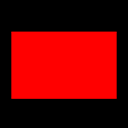
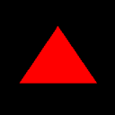
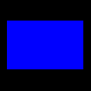
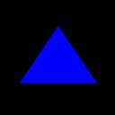

<!DOCTYPE html>
<html>
<head>
	<script src="https://ajax.googleapis.com/ajax/libs/jquery/3.4.1/jquery.min.js"></script>

	<script src ="jspsych-6.1.0/jspsych.js"></script>
	<script src="jspsych-6.1.0/plugins/jspsych-html-keyboard-response.js"></script>
	<script src="jspsych-6.1.0/plugins/jspsych-image-keyboard-response.js"></script>
	<link href="jspsych-6.1.0/css/jspsych.css" rel="stylesheet" type="text/css"></link>

     <link href="https://cdnjs.cloudflare.com/ajax/libs/toastr.js/latest/css/toastr.min.css" rel="stylesheet"/>
    <script src="https://cdnjs.cloudflare.com/ajax/libs/toastr.js/latest/js/toastr.min.js"></script>

    <style>
        body{
            background-color: black;
            color: white;
        }
    </style>
	
</head>

<body>
	
</body>

<script>

    var timeline =[];
	var practice_instructions_1 = {
        type: 'html-keyboard-response',
        stimulus: '<p>This is a matching task.<br>You will see an object in the center of the screen, and a word<br>at the bottom of the screen.  The word will be SHAPE or COLOR.<br>The word at the bottom of the screen will tell you how to match<br>the object in the center to one of the objects in the corners.<br><br><br><br>When you have to match by COLOR, you should push the<br>LEFT button for RED and the RIGHT button for BLUE.<br><br>When you have to match by SHAPE, you should push the<br>LEFT button for TRIANGLE and the RIGHT button for RECTANGLE.<br><br><h1>SHAPE</h1></p>',
        choices: [32],

    }

    timeline.push(practice_instructions_1);

    var practice_instructions_2 = {
        type: 'html-keyboard-response',
        stimulus: '<p>Try to respond quickly and accurately, but if you make<br>a mistake just keep going. We will try some practice trials first.<br><br>Press the SPACEBAR to begin.<br> <br><br><br><br><br><h1>SHAPE</h1></p>',
        choices: [32],

    }

    timeline.push(practice_instructions_2);


    var test_shapes=[
    //rr,tr,rb,SHAPE
        {stimulus:'<p> <br><br><br><br><br><h1>SHAPE</h1></p>', data:{test_part:'test', correct_response: 39}},
        //tb,tr,rb,SHAPE
        {stimulus:'<p> <br><br><br><br><br><h1>SHAPE</h1></p>',data:{test_part:'test', correct_response: 37}},
        //tb,rb,tr,SHAPE
        {stimulus:'<p> <br><br><br><br><br><h1>SHAPE</h1></p>',data:{test_part:'test', correct_response: 39}},
        //rr,rb,tr,SHAPE
        {stimulus:'<p> <br><br><br><br><br><h1>SHAPE</h1></p>', data:{test_part:'test', correct_response: 37}},
        //COLOR
        //rr,tr,rb,COLOR
        {stimulus:'<p> <br><br><br><br><br><h1>COLOR</h1></p>', data:{test_part:'test', correct_response: 37}},
        //tb,tr,rb,COLOR
        {stimulus:'<p> <br><br><br><br><br><h1>COLOR</h1></p>',data:{test_part:'test', correct_response: 39}},
        //tb,rb,tr,COLOR
        {stimulus:'<p> <br><br><br><br><br><h1>COLOR</h1></p>',data:{test_part:'test', correct_response: 37}},
        //rr,rb,tr,COLOR
        {stimulus:'<p> <br><br><br><br><br><h1>COLOR</h1></p>', data:{test_part:'test', correct_response: 39}}
    ];


    var fixation = {
        type: 'image-keyboard-response',
        stimulus: 'resource/examiner/cpt/Solid_black.png',
        choices: jsPsych.NO_KEYS,
        trial_duration: 1000,
        data: {test_part: 'fixation'}
    }

    var test= {
    	type: "html-keyboard-response",
    	stimulus: jsPsych.timelineVariable('stimulus'),
    	choices:[37,39],//left or right
       // trial_duration: 1000,
        data: jsPsych.timelineVariable('data'),
        on_finish: function(data){
            if (data.key_press==data.correct_response){
                toastr.success('Correct');
            }
            else{
                toastr.error('Incorrect');
            }
        }
    }

    var stimuli_images_r1 = jsPsych.randomization.repeat(test_shapes, 4)
    var practice_procedure_1 = {
    	timeline: [fixation,test],
    	timeline_variables: stimuli_images_r1,
    	//randomize_order: true,
        //repetitions: 5
    }

    timeline.push(practice_procedure_1);

       var practice_instructions_3 = {
        type: 'html-keyboard-response',
        stimulus: '<p>You have completed the practice trial.<br>Let us do another practice trial. The instructions are the same.<br><br>When you have to match by COLOR, you should push the<br>left button for red and the right button for blue.<br><br>LEFT = RED<br>RIGHT = BLUE <br><br>When you have to match by SHAPE, you should push the left<br>button for triangle and the right button for rectangle.<br><br>LEFT = TRIANGLE<br>RIGHT = RECTANGLE<br><br>Press the SPACEBAR to begin.<br><br><h1>SHAPE</h1></p>',
        choices: [32],

    }

    timeline.push(practice_instructions_3);

    timeline.push(practice_procedure_1);

       var testing = {
        type: 'html-keyboard-response',
        stimulus: '<p>Now let us move on to the task, the instructions are the same but<br>you will no longer receive feedback after your responses.<br><br>When you have to match by COLOR, you should push the LEFT<br>button for RED and the RIGHT button for BLUE.<br><br>When you have to match by SHAPE, you should push the LEFT<br>button for TRIANGLE and the RIGHT button for RECTANGLE.<br><br>Try to respond quickly and accurately, but if you make<br>a mistake just keep going.<br><br>Press the SPACEBAR when you are ready to begin.<br><br><h1>SHAPE</h1></p>',
        choices: [32],

    }

    timeline.push(testing);

    var stimuli_images_r2 = jsPsych.randomization.repeat(test_shapes, 8)

    var test_main = {
        type: "html-keyboard-response",
        stimulus: jsPsych.timelineVariable('stimulus'),
        choices:[37,39],//left or right
       // trial_duration: 1000,
        data: jsPsych.timelineVariable('data')
    }

    var procedure = {
        timeline: [fixation,test_main],
        timeline_variables: stimuli_images_r2,
        //randomize_order: true,
        //repetitions: 5
    }

    timeline.push(procedure);

    var final_message = {
        type: 'html-keyboard-response',
        stimulus: '<p>The task is complete.</p>',
        choices: jsPsych.NO_KEYS,

    }

    timeline.push(final_message);


    jsPsych.init({
        timeline: timeline
    });

        //toastr
    toastr.options ={
          "closeButton": false,
          "debug": false,
          "newestOnTop": false,
          "progressBar": false,
          "positionClass": "toast-top-center",
          "preventDuplicates": false,
          "onclick": null,
          "showDuration": "300",
          "hideDuration": "1000",
          "timeOut": "1000",
          "extendedTimeOut": "1000",
          "showEasing": "swing",
          "hideEasing": "linear",
          "showMethod": "fadeIn",
          "hideMethod": "fadeOut"
    }


</script>

</html>
